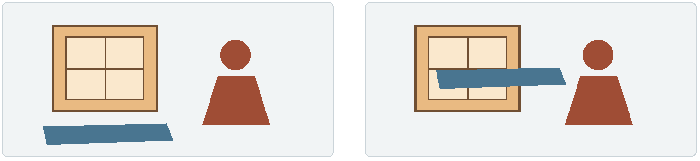
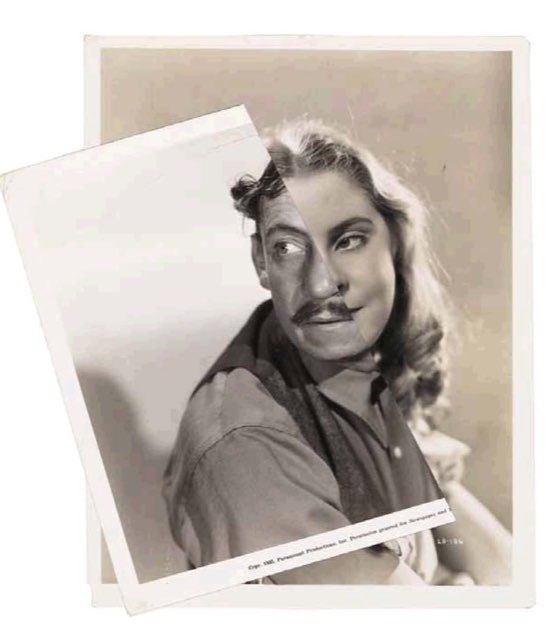
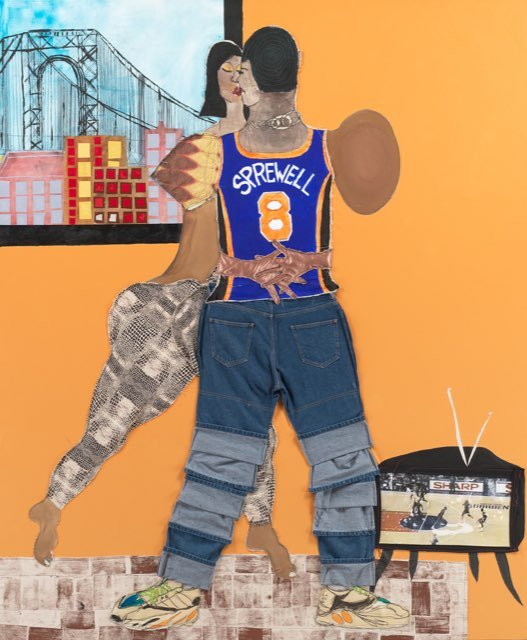
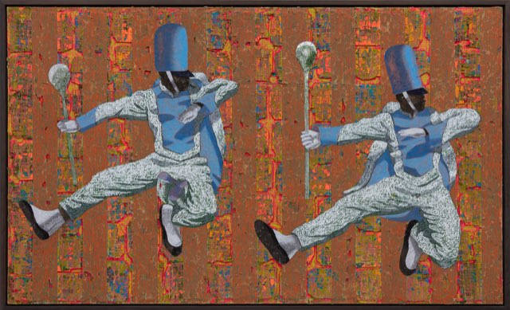
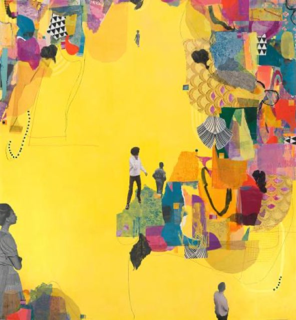
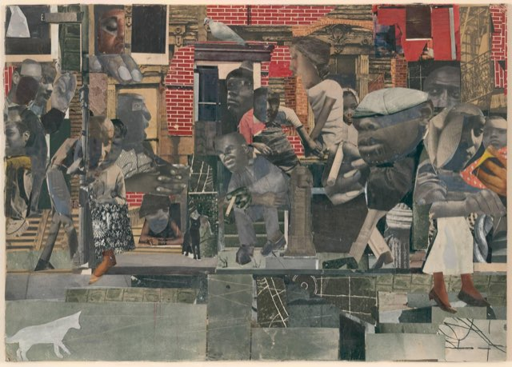

John Stezaker
Mask X · 1982
Fotomontaggio
Guarda: Un paesaggio occupa il posto del volto; i bordi della cartolina restano visibili.

Con il collage puoi costruire un’immagine usando frammenti che prima appartenevano a fotografie, riviste o altri materiali. Gli artisti hanno usato questa tecnica per trasformare immagini quotidiane, immaginare scene insolite e raccontare esperienze.
Il termine collage viene dal francese coller, che significa «incollare». Indica sia la tecnica sia l’opera ottenuta. In un collage scegli frammenti, li disponi su un supporto e li fissi. Il supporto è la base che li tiene insieme, per esempio un foglio spesso o un cartoncino. Un frammento può essere anche una parola, un pezzo di stoffa o una carta colorata.
La composizione è il modo in cui organizzi i frammenti nello spazio. Se li accosti, li metti uno vicino all’altro. Se li sovrapponi, un ritaglio copre una parte di quello sotto. Puoi anche cambiare la scala, per esempio ingrandendo un dettaglio, o il contesto, spostando un oggetto in un ambiente diverso da quello della foto di partenza. Ogni scelta cambia quello che si vede e le relazioni tra gli elementi.
Nelle due prove qui sotto ci sono una finestra, una sagoma e una striscia azzurra. Nella prima disposizione vedi la finestra intera. Nella seconda la striscia ne copre una parte e attira l’attenzione su ciò che resta visibile. Hai usato gli stessi ritagli per costruire due immagini diverse.

Un’opera da osservare. In Mask X (1982) John Stezaker sovrappone la cartolina di un paesaggio al volto in una fotografia. Il bordo della cartolina resta visibile. Puoi riconoscere da dove vengono i due pezzi e vedere che insieme formano un ritratto diverso.
Per spiegarlo con parole tue. Indica quali elementi si combinano, su che cosa si dispongono e come la loro disposizione costruisce una nuova immagine.
Fonti MoMA, voce Collage · Luxembourg + Co., scheda di Mask X
In Gran Bretagna, negli anni Sessanta e Settanta dell’Ottocento, alcune donne dell’epoca vittoriana componevano album mescolando fotografie ritagliate e acquerelli. Potevano collocare un ritratto in un paesaggio immaginario o unire un volto a un corpo diverso. Questi album documentano un uso del fotocollage prima delle avanguardie del Novecento.
Fonti The Met, i fotocollage vittoriani
Il 1912 è la data centrale per il collage nell’arte moderna. In Francia, Pablo Picasso e Georges Braque sperimentano l’ingresso di materiali quotidiani dentro l’opera. I cubisti scompongono le forme e le ricostruiscono nel quadro. Un elemento prelevato dal mondo reale può così stare accanto a una parte disegnata o dipinta.
Nella Natura morta con sedia impagliata, Picasso inserisce una tela cerata stampata che imita l’intreccio di una sedia e usa una corda come cornice. In Fruttiera e bicchiere, Braque accosta il disegno a carboncino a carta da parati stampata a finto legno. Braque indica questo lavoro del settembre 1912 come il suo primo papier collé. Papier collé significa «carta incollata».
Fonti Musée Picasso Paris, Picasso · The Met, Braque · MoMA, Cubismo sintetico
Nel Dada berlinese, dopo la Prima guerra mondiale, Hannah Höch ritaglia fotografie e parole dalla stampa. Ricombinandole cambia il messaggio delle immagini e mette in discussione, tra le altre cose, i ruoli assegnati alle donne. In Germania, Kurt Schwitters usa carte, etichette e altri materiali di recupero nelle opere che chiama Merz.
Max Ernst, attivo nel Dadaismo e poi nel Surrealismo, unisce frammenti di illustrazioni per costruire scene insolite. In Une semaine de bonté, pubblicato nel 1934, ricompone immagini di libri e riviste dell’Ottocento. Le figure sembrano appartenere alla stessa scena, anche quando l’incontro è impossibile nella vita quotidiana.
Fonti MoMA, Hannah Höch · MoMA, Merz · MoMA, Max Ernst
Mimmo Rotella lavora sui manifesti pubblicitari sovrapposti e usa lo strappo per mostrare gli strati sottostanti. Romare Bearden combina carte, fotografie e pittura per dare forma a scene della vita quotidiana e a ricordi personali. Con i frammenti puoi trasformare un’immagine pubblicitaria o dare forma a un ricordo.
Fonti Fondazione Mimmo Rotella · National Gallery of Art, Romare Bearden
Per iniziare bastano un cartoncino, forbici e colla stick, insieme a pochi ritagli. Puoi usare riviste, giornali, carte colorate, fotocopie e tessuti leggeri. Scegli la base in base al peso dei pezzi. Per materiali più pesanti usa un cartone rigido e, se serve, poca colla vinilica. Una matita aiuta a segnare la posizione dei frammenti. Proteggi il tavolo con un foglio di recupero e tieni da parte i ritagli che potrai riusare.
| Tecnica | Come si usa |
|---|---|
| Collage di carta | Ritagli o strappi carte di forme, colori e spessori diversi. I bordi netti separano le forme. I bordi strappati mostrano le fibre della carta. |
| Collage materico | Aggiungi stoffa, filo o cartone ondulato. Le superfici cambiano al tatto e i materiali più spessi creano rilievi. |
| Fotomontaggio | Combini intere fotografie o loro parti. Puoi spostare una figura in un ambiente nuovo o ricomporre un volto con frammenti diversi. |
| Collage digitale | Ritagli e organizzi immagini con un programma. I livelli funzionano come fogli sovrapposti che puoi spostare, ridimensionare o rendere trasparenti. |
Il décollage è una tecnica collegata. Si strappa o si rimuove una parte dello strato superiore di materiali già sovrapposti. Nei lavori di Rotella questo gesto fa riapparire parti di manifesti che prima erano coperte.
Nel collage Let them be children (2018), Deborah Roberts combina frammenti fotografici per costruire figure di bambini. I diversi frammenti cambiano le proporzioni dei corpi. Puoi riconoscerli osservando come si congiungono mani, volti e abiti.
Opera da osservare Frist Art Museum, Let them be children
1. Scegli un tema e raccogli. Decidi che cosa vuoi rappresentare. Prendi pochi frammenti utili all’idea e scegli un supporto su cui puoi spostarli con facilità.
2. Disponi senza incollare. Prova una prima composizione. Poi cambia la posizione, la scala o la sovrapposizione di un elemento. Confronta che cosa si nota per primo nelle due versioni.
3. Fissa i frammenti. Quando hai scelto, incolla prima lo sfondo e poi quello che gli va sopra. Puoi aggiungere tracce di matita, colore o parole se aiutano a collegare i pezzi.
4. Dai un titolo e spiega una scelta. Un titolo orienta lo sguardo. Mostra un dettaglio e spiega che cosa cambia grazie alla posizione, al materiale o all’accostamento che hai scelto.
Fonti SFMOMA, attività per creare un collage · Fondazione Mimmo Rotella, il décollage
Il collage è utile quando vuoi comunicare un’idea con immagini. A scuola puoi usarlo dopo la lettura di un racconto per rappresentarne un passaggio, durante un progetto per confrontare proposte oppure alla fine per costruire un cartellone comune. Prima di scegliere i materiali, chiediti che cosa le persone dovranno poter fare: esprimere un’idea, raccontare, scegliere o collaborare.
In un laboratorio socioeducativo, un collage può dare a ciascuno un modo per contribuire. In un centro diurno, per esempio, puoi proporre immagini di luoghi e oggetti che le persone riconoscono o scelgono come significativi. Puoi offrire figure già ritagliate o pezzi più grandi e lasciare che ogni persona scelga dove metterli. La proposta si adatta alle preferenze e ai modi di partecipare di chi hai davanti.
Un collage è autobiografico quando, attraverso i frammenti, racconti qualcosa della tua esperienza. Può partire da un ricordo, da un luogo importante, da una situazione quotidiana o da un cambiamento che stai vivendo. Una foto personale è una possibilità. Puoi usare anche immagini trovate, parole o forme che per te hanno un significato.
In Tomorrow I May Be Far Away del 1967, Romare Bearden combina carte e pittura. Una casa di legno e altri elementi richiamano luoghi della Carolina del Nord legati ai suoi ricordi. L’opera aiuta a capire come un’immagine composta a partire da più frammenti possa rievocare un luogo senza riprodurlo come una foto.
Opera da osservare National Gallery of Art, scheda del collage di Bearden
Immagina di voler raccontare il primo giorno in una squadra nuova. Scegli la foto di un campo, una sagoma e una striscia di carta. Nella prima disposizione metti la sagoma ai margini del campo. Nella seconda la avvicini al centro e la fai toccare dalla striscia. Puoi decidere quale composizione racconta meglio come ti sentivi o come avresti voluto partecipare.
Per il nostro collage parti da un momento preciso. Scegli ciò che vuoi far vedere di quella situazione e prova due composizioni. Se ti aiuta, puoi mettere accanto come l’hai vissuta e come la vorresti vivere.
Scegli quanto condividere. Puoi rappresentare la situazione con simboli, usare copie delle foto e lasciare fuori i dettagli che vuoi tenere per te. Prima di mostrare una foto in cui si riconoscono altre persone, chiedi il loro permesso. Durante il confronto puoi spiegare una scelta visiva. Il significato personale spetta a chi ha creato il collage.
Materiale di riferimento della classe Dispensa collage, Metodologie Operative, 2SB, anno scolastico 2025–2026.
Per ogni opera osserva i frammenti e il modo in cui sono stati disposti.
Mask X · 1982
Fotomontaggio
Guarda: Un paesaggio occupa il posto del volto; i bordi della cartolina restano visibili.

Marriage (Film Portrait Collage) LVI · 2007
Collage fotografico
Guarda: Due fotografie si incontrano in un volto che non coincide con nessuna delle due.

Archetype of a 5 Star · 2018
Pittura, glitter e carta ritagliata
Guarda: L’abito è fatto di frammenti diversi: il ritratto prende forma anche attraverso ciò che lo circonda.

Uncle Scott · 2022
Stampe, carte e materiali misti
Guarda: Il volto è riconoscibile pur essendo costruito con molti frammenti e superfici.
Let them be children · 2018
Composizione figurativa a frammenti e pittura
Guarda: I frammenti cambiano scala: mani, volti e corpi non hanno proporzioni uniformi.

Before Now After (Mama, Mummy and Mamma) · 2015
Pittura e immagini fotografiche trasferite
Guarda: Le fotografie entrano nella stanza e negli oggetti; lo sfondo partecipa al ritratto.

Sprewell · 2020
Tessuti, carte, cuciture e pittura
Guarda: Il corpo combina tessuti, disegni e immagini: anche la materia costruisce la figura.

Airborne Double · 2022
Pittura, cartone e materiali su giornale
Guarda: Le figure ripetono un gesto e sembrano sospese: il movimento è parte della composizione.

Untitled #3C · 2009
Collage di carte e materiali misti
Guarda: La composizione nasce da frammenti, ritmo e densità; non contiene un ritratto riconoscibile.

No It Ain’t, Yes It Is · 2023
Carte, tessuti, filo e pittura
Guarda: Piccole figure e frammenti colorati lasciano un’ampia zona libera.

The Dove · 1964
Carte stampate ritagliate, gouache e matite
Guarda: Persone, gesti e luoghi si intrecciano: il racconto non è affidato a un solo simbolo.

Staatshäupter · 1918–1920
Collage
Guarda: Figure fotografiche e sfondo illustrato appartengono a contesti diversi.
Le opere della mostra Multiplicity documentano esperienze e identità di artisti afroamericani contemporanei.
Archetype of a 5 Star · 2018
© Jamea Richmond-Edwards · Rubell Museum
Fonte: Frist Art Museum
Uncle Scott · 2022
© Yashua Klos · Cortesia artista e Sikkema Jenkins & Co.
Fonte: Frist Art Museum
Let them be children · 2018
© Deborah Roberts · Foto Sydney Collins / Virginia Museum of Fine Arts
Fonte: Frist Art Museum
Before Now After (Mama, Mummy and Mamma) · 2015
© Njideka Akunyili Crosby · Cortesia artista e Victoria Miro
Fonte: Whitney Museum
Sprewell · 2020
Cortesia artista e Pilar Corrias · Solomon R. Guggenheim Museum
Fonte: Frist Art Museum
Untitled #3C · 2009
© Howardena Pindell · Cortesia artista e Garth Greenan Gallery
Fonte: Frist Art Museum
No It Ain’t, Yes It Is · 2023
© Brittney Boyd Bullock · Cortesia artista
Fonte: The Phillips Collection
Autori, titoli, crediti e fonti delle immagini accompagnano ogni opera nella galleria.
Competenza principale — C8: Realizzare semplici attività di animazione ludica e sociale in contesti noti.
Saperi: Obiettivi e tecniche dell'animazione ludica e sociale anche con strumenti multimediali.
Abilità: Identificare le principali tecniche di animazione ludica e sociale; Riconoscere i materiali e gli strumenti utili all'animazione ludica e sociale.
Provi la tecnica su di te per imparare a proporre un’attività espressiva ad altre persone.